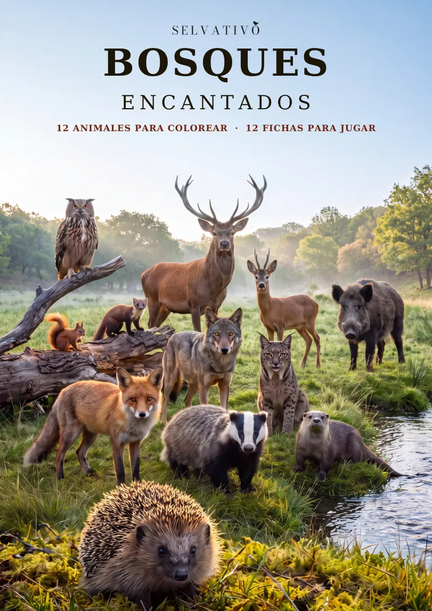
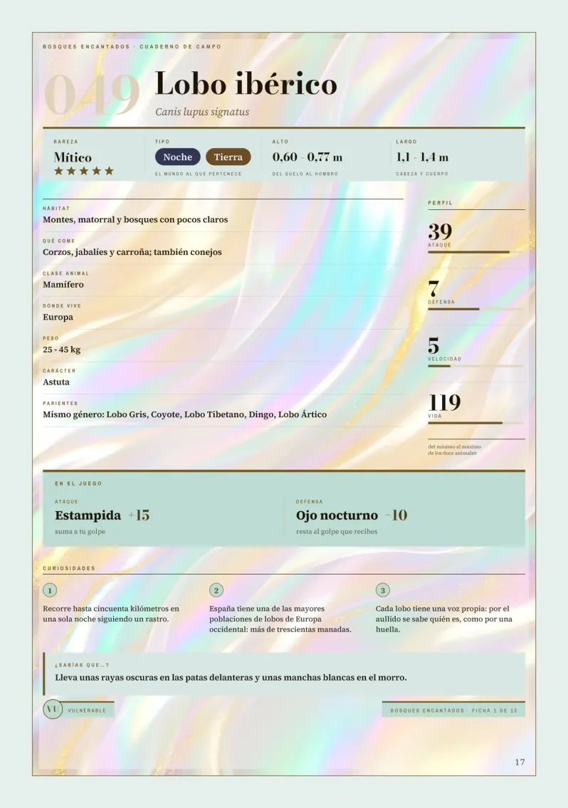
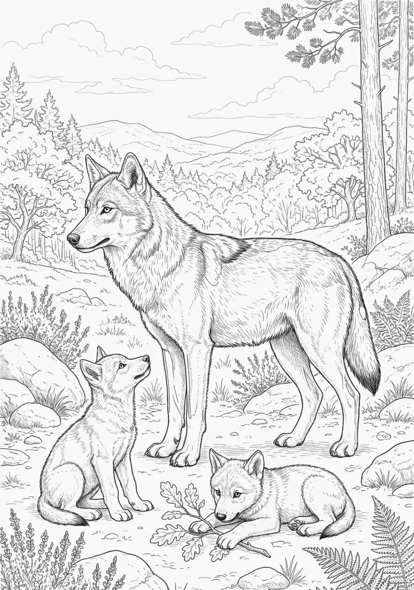

Europa, 1 de 3
Bosques Encantados
Libro de animales de Europa para colorear y jugar, a partir de 6 años. 84 páginas.
Una ficha y una lámina del libro.


Doce animales. Doce fichas. Un solo campeón.
Un libro para colorear que además es un juego. Cada animal de los bosques de Europa tiene su ficha, con todo lo que hay que saber de él; su retrato a página completa, para verlo entero y en su sitio; y justo enfrente, su dibujo esperando tus colores.
Y cuando termines de pintarlo, su ficha entra en el juego: ataque, defensa, velocidad y vida. Elige tu animal, busca un rival y que gane el mejor. Las reglas están al principio, con un ejemplo resuelto, y las partidas se apuntan en el propio libro: nada suelto que se pierda.
LOS DOCE DEL BOSQUE
Lobo ibérico · Ciervo rojo · Zorro rojo · Lince ibérico · Tejón europeo · Jabalí · Nutria europea · Ardilla roja · Búho real · Erizo · Corzo · Marta europea
QUÉ HAY DENTRO
- 12 animales para colorear, cada uno a página completa.
- 12 retratos a toda página, cada uno frente a su dibujo.
- 12 fichas con datos reales: peso, medidas, hábitat, qué come, tres curiosidades, un «¿Sabías que…?» y cuánto peligro corre su especie según la UICN.
- Duelos y una gran batalla con las fichas: uno contra uno, o seis contra seis por equipos. Cuatro páginas de arenas de duelo y cuatro hojas de gran batalla para apuntar las partidas a lápiz, borrar y volver a jugar.
- Mapa de Europa a doble página, con cada animal en su sitio y el mismo número que su ficha.
- Laberinto, sopa de letras y crucigrama, con las soluciones al final.
- Récords del bosque: el más pesado, el felino que casi desapareció, uno de los búhos más grandes del mundo… y el más fuerte, que se decide jugando.
- Ponte a prueba: seis preguntas, el intruso y «adivina quién soy», con todas las respuestas en las fichas.
- Cuaderno de exploración: una casilla y una fecha por cada animal terminado.
- Cuidar el bosque: qué necesitan estos animales y qué puede hacer un niño o una niña empezando por su calle.
- Inventa tu animal: una ficha en blanco para crear uno que no existe y enfrentarlo a los doce.
POR QUÉ ESTE Y NO OTRO
Aquí se colorea, se lee, se mira, se escribe y se juega. Y cuando el último dibujo está pintado, el libro sigue sirviendo: las fichas se juegan una y otra vez.
Formato grande A4 (21 × 29,7 cm) · 84 páginas · interior a todo color · a partir de 6 años.
Lo único que hace falta: lápices de colores y un lápiz con goma. Detrás de cada dibujo, la página va en blanco.
Primer libro de Europa de la colección «Selvativo». Todas las fichas de la colección hablan el mismo idioma, así que estos doce se pueden enfrentar a los animales de cualquier otro libro. Al final, un adelanto del siguiente: «Animales del Norte».
Bosques Encantados